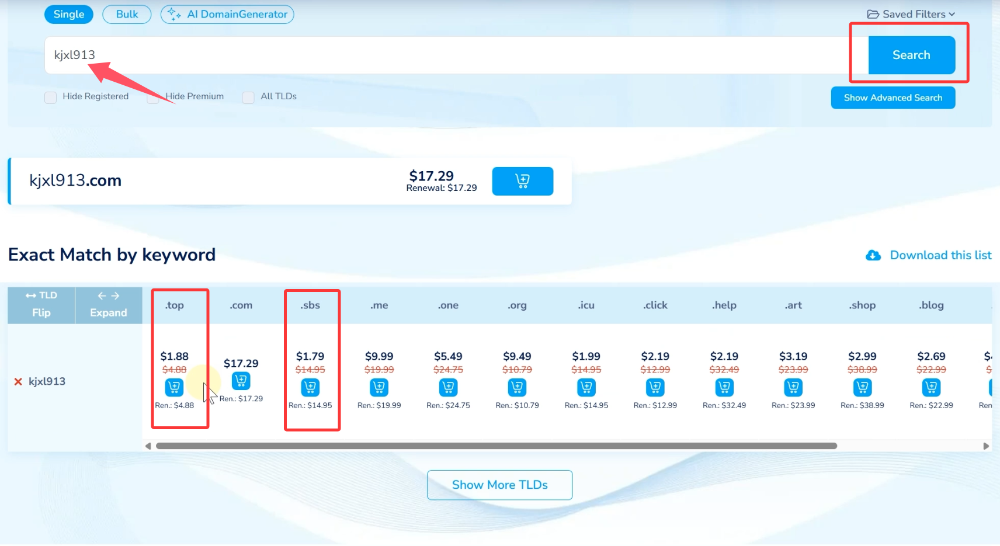
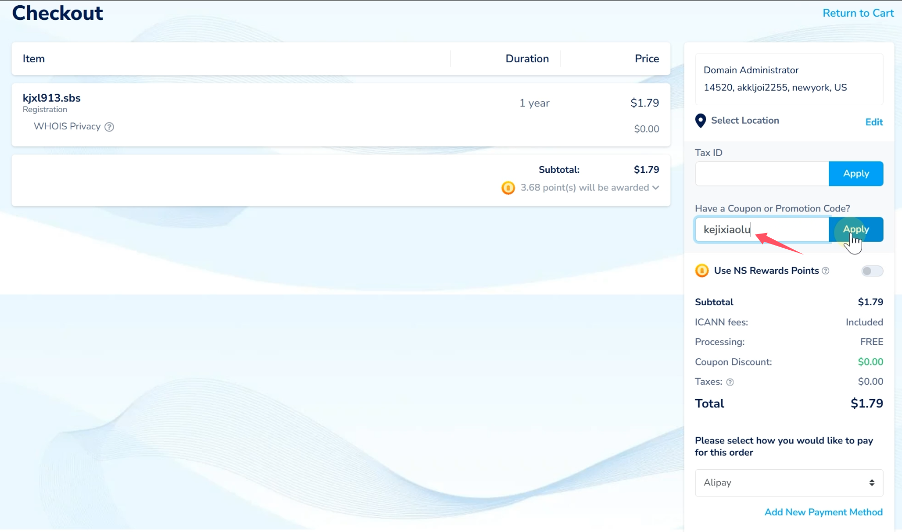
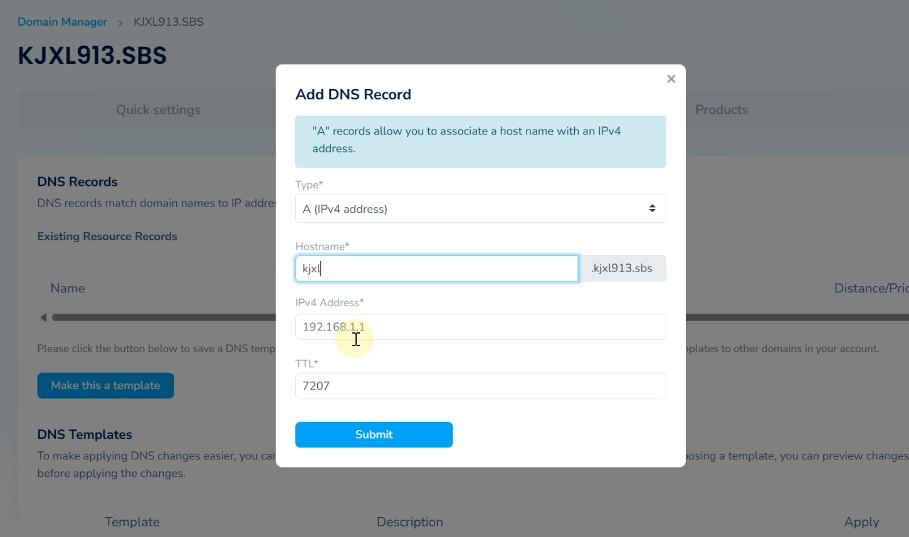
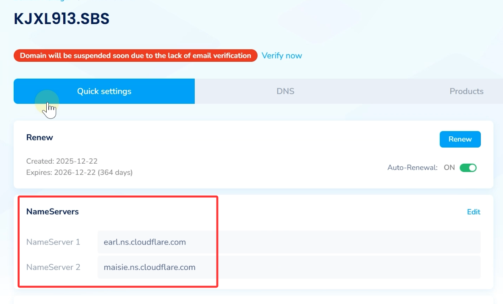
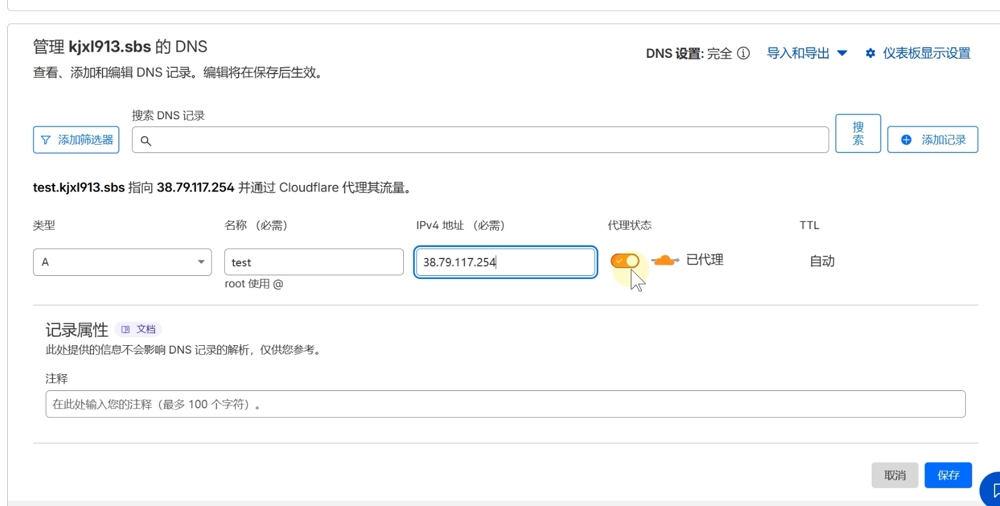
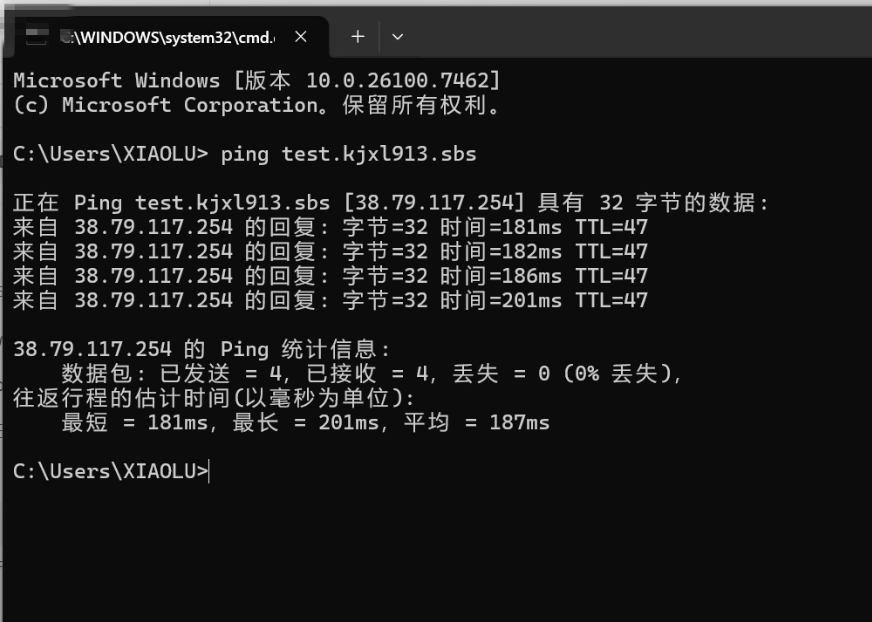

为什么搭建网站一定要有域名？最省心的域名注册 + Cloudflare 托管全教程
🕓2026年01月01日
视频教程：▶https://youtu.be/xJB7YOnJJdM?si=uLKw-tEI4gj8v5OZ
在搭建网站之前，域名 是绕不开的一步。很多新手都会问：
👉 搭建网站到底要不要域名？
答案是：非常有必要，而且区别很大。
本文将从「为什么需要域名」讲起，手把手带你完成：
- 域名注册
- 域名购买
- DNS 解析
- 域名托管到 Cloudflare
一、为什么搭建网站一定要有域名？

总结一句话：
域名 = 安全 + 专业 + 省心
二、域名注册平台推荐
这里推荐一个大佬常用的域名注册平台：
推荐在 Namesilo 进行购买（新用户1美元优惠券：kejixiaolu），因为他的 WHOIS 隐私 是免费的，可以适当的进行一下隐私保护，而且域名还都挺便宜的。
- 💰 域名价格便宜
- 🔒 WHOIS 隐私保护免费
- 🧑💻 非常适合个人网站 / 新手使用
下面开始完整注册与购买流程。
域名解析完整版教程：点此进入>>
三、注册域名账号
1、创建账号
打开域名注册网站 Namesilo ，点击用户头像 → 注册账号
2、填写注册信息
- 用户名：登录用，简单好记即可
- 邮箱：必须能接收验证码，建议使用国外邮箱
- 密码：8 位以上，包含大小写字母 + 数字 + 特殊符号
- 完成人机验证 → 创建账户
注册成功后会自动进入个人主页。
⚠️ 如果提示“用户名已被使用”，但刷新后已登录成功，直接继续即可。
四、购买域名

1、搜索域名
点击「域名首页」，输入你想要的域名，点击搜索
2、选择域名后缀
- .com：最贵，不推荐新手
- .top / .sbs：便宜实用，完全够用
👉 如果只是自用或搭建服务，选最便宜的就行
选择好后 → 加入购物车
3、结算与支付
- 域名时长：1 年
- 价格：约 1.79 美元
- 其他增值服务可全部不选
💡 新用户优惠码

如果你是新注册用户，可以尝试输入：kejixiaolu，可减 1 美元，能省就省。
支付方式支持：
- 支付宝（SEE MORE 里可以找到）
支付完成后，账户中就会显示已有域名。
五、填写域名个人信息（WHOIS）
首次购买域名后，需要填写个人资料：
- 姓名：随便填英文即可
- 国家：China
- 城市 / 地址：随意填写，不验证
- 邮编：
- 国内：6 位
- 国外：5 位
- 电话：可随便填 11 位数字
- WHOIS 隐私邮箱：海外邮箱都可
填好后点击保存。
六、在域名商处解析域名（原始方式）
1、进入 DNS 页面
点击域名旁边的 蓝色圆球，进入 DNS 管理页面
2、邮箱验证（必须）
- 点击「立即验证」
- 打开邮箱 → 点击验证链接
3、添加 DNS 记录

先将系统自动生成的记录删除，再添加记录：
- 类型：A
- 主机名：自定义（简短好记）
- IP 地址：你的服务器 IP
⚠️ 在域名商解析，一般需要 15 分钟左右生效
七、为什么强烈建议托管到 Cloudflare？
相比直接在域名商解析：
- 🚀 解析几乎立即生效
- 🧠 操作简单，界面友好
- 🛡 自动防护大量常见攻击
- ⚙ 后期搭建非常省事
一句话总结：
域名买完，第一件事就是丢进 Cloudflare
八、将域名托管到 Cloudflare
1、添加域名
- 注册并登录 Cloudflare
- 点击「加入域」
- 输入你刚购买的域名
- 选择 免费计划，确认并继续
2、修改名称服务器

回到域名注册商后台：
- 打开域名 DNS 页面
- 点击「快速设置」→ 编辑名称服务器
- 将原有 NS 替换为 Cloudflare 提供的 NS
- 删除多余的第三个 DNS，保存
3、等待生效
- Cloudflare 会自动检查名称服务器
- 实际等待时间：10 分钟左右
- 状态显示「活动」即表示托管成功
九、在 Cloudflare 中解析域名（推荐方式）
1、进入 Cloudflare → 选择域名
2、点击 DNS → 记录 → 添加记录

填写：
- 类型：A
- 名称：随意填写（如 CS）
- IP 地址：服务器 IP
- 小云朵：关闭（直连）
保存后，立即生效。

你可以直接 ping 域名 测试。
十、总结
- 域名是网站的基础，一定要有
- 注册域名并不复杂，新手也能轻松完成
- Cloudflare 托管 = 更快 + 更稳 + 更省心
⚠️ 提醒一句：
👉 域名只是搭建的第一步
后面还有服务器、环境、协议、配置等关键步骤。
下一篇，我们就正式进入 实操搭建阶段，把所有容易踩坑的地方一次性讲清楚。
我们下篇见 👋
📎 相关教程： - 3X-UI搭建完整教程：https://youtu.be/2oAyF4BHAsY?si=Y53BIw0jzOm_4uSN